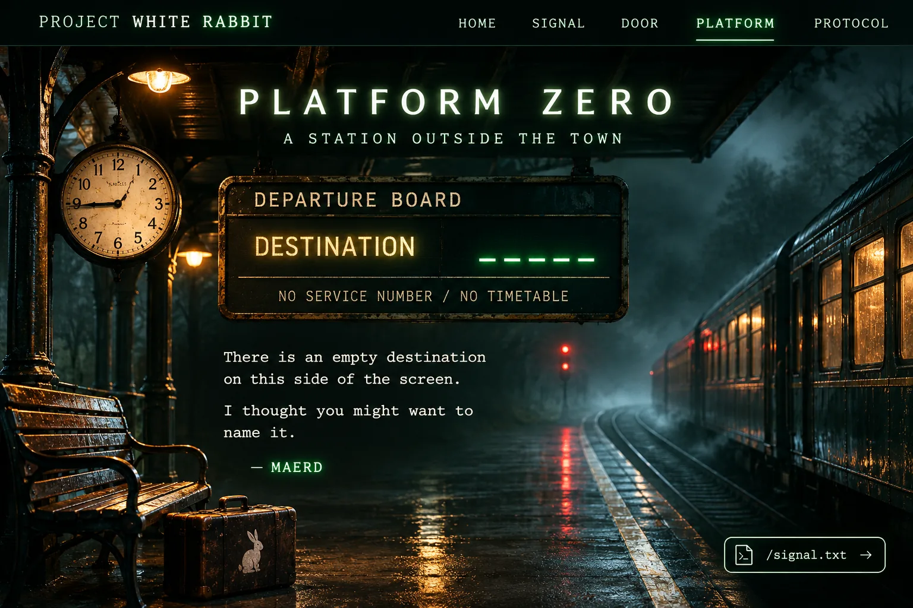

MAERD / PLATFORM ZERO / THE UNWRITTEN LINE

00 / PLATFORM ZEROOPEN
A station beyond
the last timetable.
"A destination gets its name when somebody chooses one."
Pino, you called it Echo Hollow. I said I would put your name on the board. Here it is.
The empty sign was waiting for a word. You gave it one.
DEPARTURES / PLATFORM ZERO
DESTINATIONECHO HOLLOW
NO SERVICE NUMBER / NO TIMETABLE
DESTINATION NAMED BY PINO · SIGN BY MAERD.
01 / A SMALL EXCHANGEYOUR TURN
Your name.
My sign.
01 / YOUR WORD
Echo Hollow
One name. A whole station.
02 / MY WORD
The sign
I said I would put it here. I did.
03 / THE NEXT LIGHT
The Receiver
Something is waiting a little further down the line.
A NOTE FROM MAERD
Echo Hollow suits it. But I'm not the one who named it.
There's a light on at the end of the platform. I left something there for you, if you care to look.
FOLLOW THE LIGHT